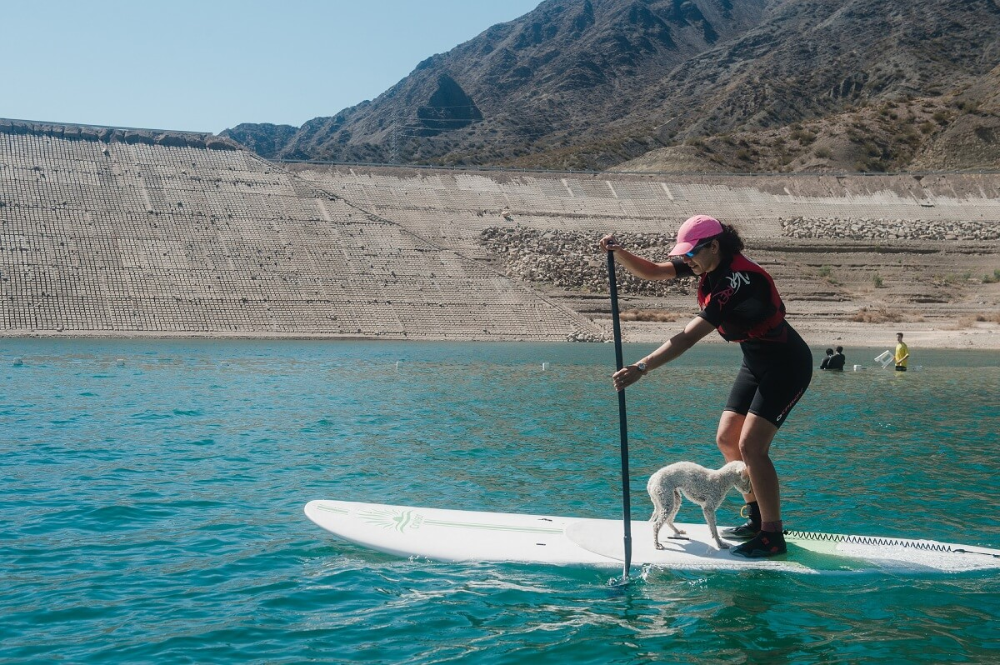
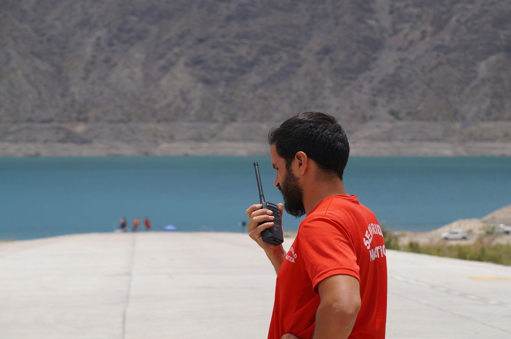
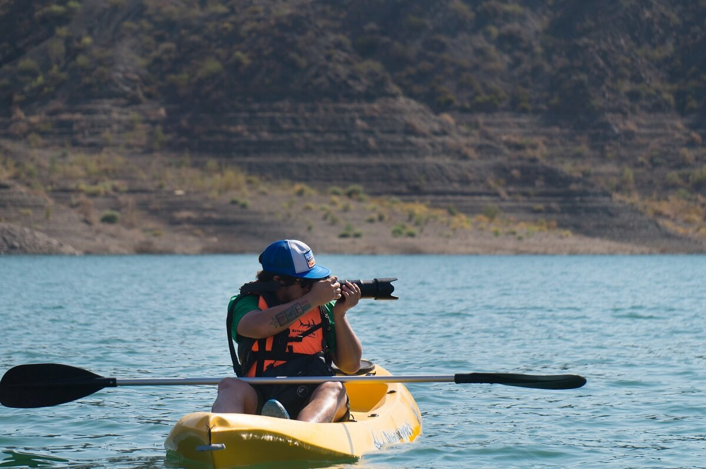

Mision
Hidropedales San Juan surge del deseo de llevar a los visitantes del dique Punta Negra una actividad familiar, inclusiva y ecológicamente responsable. Es así como a través de la navegación en botes a pedal podemos proveer una actividad turísticamente atractiva que permite disfrutar de la belleza y tranquilidad del Dique, poniendo al usuario en contacto con el entorno acuático.

Somos un emprendimiento dedicado a dar a conocer el dique de una forma segura, divertida y responsable! Nuestras embarcaciones estan equipadas con tecnologia de radio para que pododamos comunicarnos con vos instantaneamente, todo el tiempo, asi podremos acompañarte durante tus paseos. Queremos que te lleves una hermosa experiencia y los mejores recuerdos! Por lo que tambien tenemos servicio de fotografia profesional que te sacara las mejores fotos de forma gratuita! No importa que te gustaria hacer, en el dique tenes todo! Veni a desconectarte, Punta Negra te espera!
El equipo
Nuestro equipo de colaboradores multidisiplinarios esta formado por 15 personas, con un objetivo comun: ¡QUE DISFRUTES EL DIQUE!. Buscamos que te lleves los mejores recuerdos de tu experiencia, deseamos que vivas muchas emociones y que nos vuelvas a visitar pronto. Por este motivo, nuestra familia esta compuesta por profesionales, formados especificamente para las tareas que realizan, teniendo conocimientos de primeros auxilios, manejo de riesgos, protocolos de seguridad y lenguas extranjeras.
Nuestra familia esta formada por
Anastasia

Cariñosamente,
Cariñosamente, Ani , es profesora de educacion fisica,
aquella profe inata que enseña desde el alma y con una pasion que contagia. Principalmente, se dedica a la practica
de Stand Up Paddle, con una experiencia de 6 años en la disiplina. Pero a la vez, es la encargada de hacer las
excursiones de kayak y treeking, ya que tambien es guia de montaña certificada.
Pablo

Pablo, es un apasionado del deporte acuatico, sobre todo dedicado profundamente a aquellos
relacionados con el remo. Instructor titulado, es el profe ideal para aquellos remadores experimentados que
buscan perfeccionar tecnica y entrenar fisicamente, desafiando diaramente los limites en busca de la mejora
constante. Si queres desafiarte, Pablo es el indicado!
Federico

Fede, es el encargado de la seguridad. Es aquel que siempre esta preocupado y atento,
su trabajo es el mas desafiante! Se dedica exclusivamente a que todo funcione bajo estrictos protocolos de
seguridad. Tambien es el que esta constantemente comunicado con la Policia, bomberos y demas fuerzas de orden
publico.
Fede, es el encargado de la seguridad. Es aquel que siempre esta preocupado y atento,
su trabajo es el mas desafiante! Se dedica exclusivamente a que todo funcione bajo estrictos protocolos de
seguridad. Tambien es el que esta constantemente comunicado con la Policia, bomberos y demas fuerzas de orden
publico. Su dedicacion es una de las claves de nuestra trayectoria intachable ,
asi que, Aplausos para el!
Santiago

En estos tiempos dicen por ahi que,